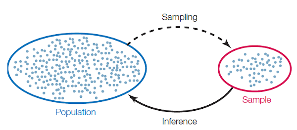

3 母群與樣本 (Population and Sample)
這一章節會先介紹樣本 (sample) 與母群 (population) 的分別，並且介紹統計學當中描述統計 (descriptive statistics) 與推論統計 (inferential statistics) 的概念。在描述統計上會介紹集中量數與分散量數；推論統計一般而言包含假設檢定 (hypothesis testing) 與信賴區間 (confidence interval) 。在這個主題中，只探討單一樣本 (one sample) 中平均數 (mean) 的推論統計──亦即，如何藉由樣本平均數 (sample mean) 推論母群平均數 (population mean) 。
3.1 學習目標
母群與樣本
機率抽樣：簡單隨機抽樣、分層隨機抽樣、聚落隨機抽樣、系統抽樣
非機率抽樣
3.2 母群與樣本
Definition 3.1 (基本定義)
量測 (measurement) 是將物體或事件賦予數字的過程 (Stevens, 1946) 。
變數、變項 (variable) 代表一個會隨著不同有機體、情境或環境而有所不同的特徵或現象。
常數 (constant) 是不會改變的數。
隨機變數 (random variable) 是一個從樣本空間S到實數的函數。(參考主題一定義3)
Definition 3.2 (資料集 data set) 若記錄變項在不同的個體 (individual) 或實驗單位 (experimental unit) ，會形成資料集 (data set)。
單變量資料集 (univariate data set) ：單一變項在不同個體的不同觀察值 (observation) 形成的資料集。
雙變量資料集 (bivariate data set) ：不同個體在兩變項上的成對資料形成的資料集。
多變量資料集 (multivariate data set) ：不同個體在多變項上的資料形成的資料集，雙變量為其特例。
Definition 3.3 (母群與樣本)
母群 (population) ：研究者關心的所有個體或元素所形成的群體，樣本是抽樣自母群。
普查 (census) ：蒐集母群當中所有個體的資料。
抽樣 (sampling) ：從母群當中抽出樣本的過程。
樣本 (sample) ：由母群的子集合形成的群體。
代表性樣本 (representative sample) ：在統計特性上與母群類似的樣本。
偏誤樣本 (biased sample) ：非代表性樣本。
母群當中的個體數目稱為母群數 (population size, N) 。
樣本當中的個體數目稱作樣本數 (sample size, n) 。

Definition 3.4 (抽樣方法 sampling methods) 機率抽樣 (probability sampling) 或隨機抽樣 (random sampling) 代表抽樣方法涉及機率的計算；相對來說，非機率抽樣 (nonprobability sampling) 或非隨機抽樣 (nonrandom sampling) 不涉及機率的計算。
常見隨機抽樣為：
簡單隨機抽樣 (simple random sampling)
分層隨機抽樣 (stratified random sampling)
定比例分層隨機抽樣 (proportional stratified sampling)
非定比例分層隨機抽樣 (disproportional stratified sampling)
聚落隨機抽樣 (cluster random sampling)
系統抽樣 (systemic sampling)
上述方法除了非定比例分層隨機抽樣以外都是等機率選擇法 (equal probability of selection method, EPSEM) ，代表抽到每一個個體的機率皆相同。
常見的非機率抽樣為：
便利抽樣 (convenience sampling)
配額抽樣 (quota sampling)
立意抽樣 (purposive sampling)
滾雪球抽樣 (snowball sampling)
若抽到每一個個體的機率不相同，亦即，抽樣法非 EPSEM，則抽到的樣本為偏誤樣本。
What Are The Types Of Sampling Techniques In Statistics - Random, Stratified, Cluster, Systematic